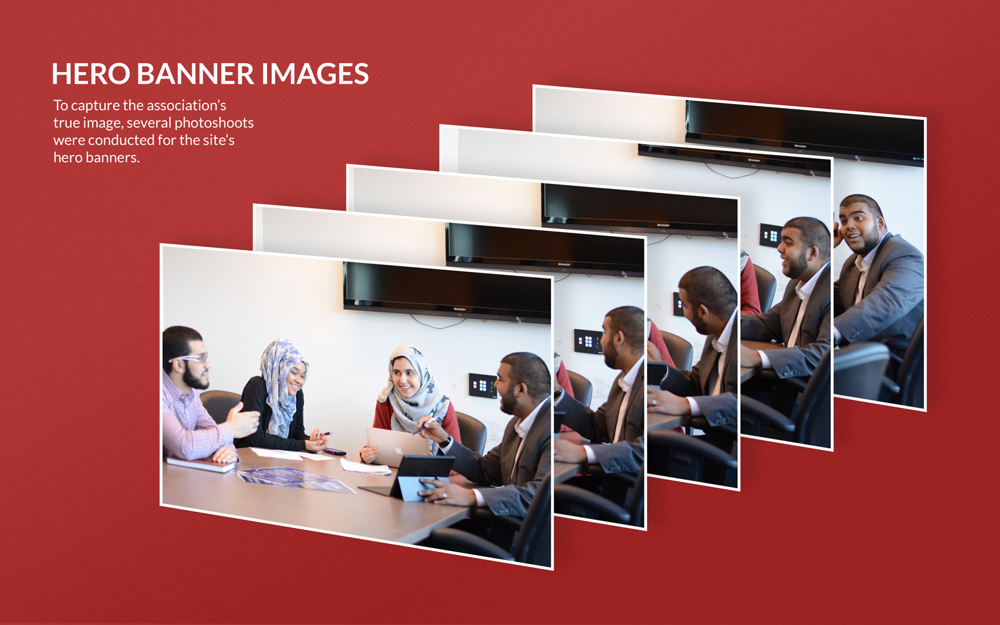
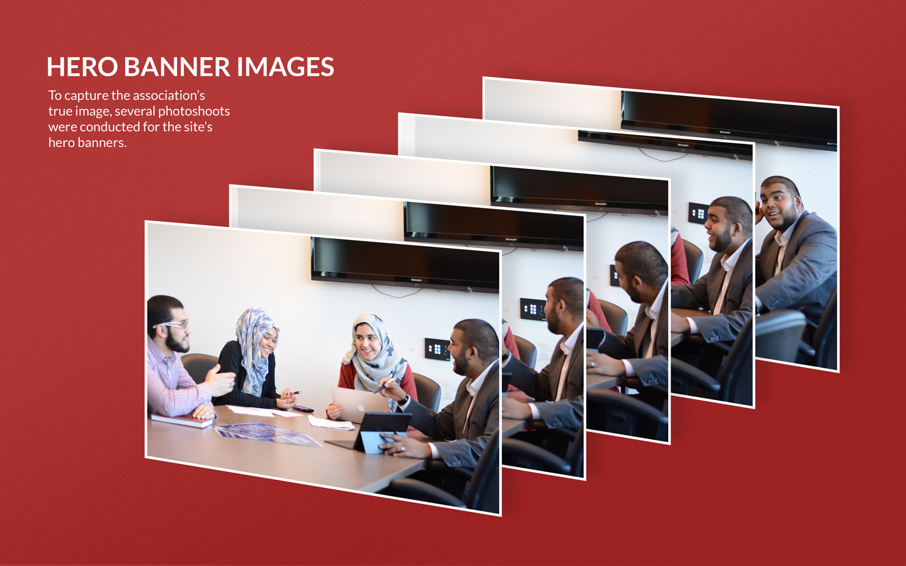

MSA Website Redesign
Prototyping • Wordpress Template
As a part of the rebrand the MSA took on last year, it required a completely new online presence. With a team consisting of 2 photographers, a copywriter, and 2 developers, I worked closely with each member to develop a brand new website for the association. Using the content collected from the board, I initially designed a sitemap to plan the site flow. I then put together simple wireframes for the developers to build the skeleton of the site. And finally, I designed prototypes of the visual design of the site. We developed this site through a theme on wordpress for future board members to easily customize it to their needs.